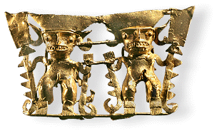
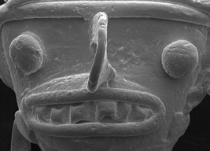

Lost-wax casting is a method of making fine castings which have detailed surface decorations. First a model of the item to be cast is made from beeswax. This model is then coated with clay to make a mould. This is then baked, so that the clay hardens and the wax melts and flows out. The clay mould is now ready for the gold to be poured in. After it has cooled, the gold object can be removed from the clay and cleaned up.
The magnified scanning electron microscope image of the lost-wax cast pendant highlights the fine details originating from the wax model. The face of this model is only 11mm wide. Notice the teeth, which were originally modelled from a folded wax strip, and the eyes which were small balls of wax.
